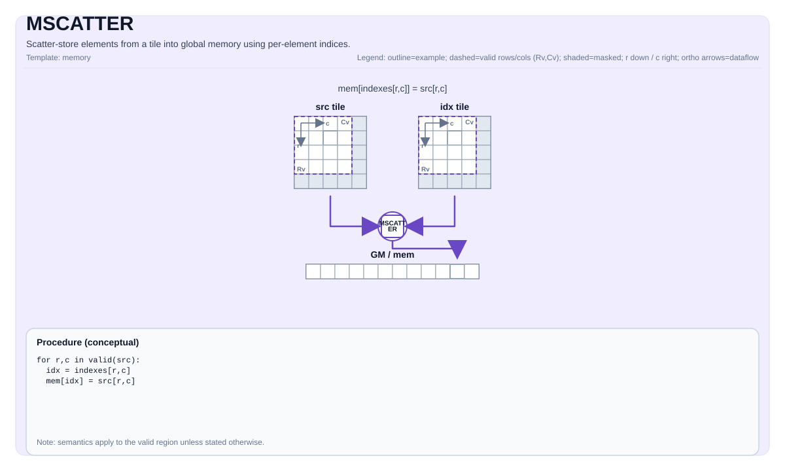

MSCATTER¶
指令示意图¶

简介¶
MSCATTER 通过UB索引Tile将UB源Tile的数据写入GM GlobalTensor。操作模式通过 Coalesce 模板参数显式选择：
Coalesce::Row（默认）——将整行src[r, :]散射到table[idx[r], :]。索引tile是1-D形式（[1, R]行主序；Ascend 950PR/Ascend 950DT上也支持[R, 1]列主序）。允许R = 1。Coalesce::Elem——从src[R, C]（或src[1, N]）通过idx[R, C]逐元素散射到一维化table。索引tile必须与源具有相同的有效形状。允许退化的(1, 1)情况。
写入行为通过正交的模板策略控制：
ScatterAtomicOp—None（普通存储）、Add、Max、Min。原子数据类型支持因目标而异（见下表）。ScatterOOB—Undefined、Skip、Clamp、Wrap。没有Zero选项（操作写入已有表；越界索引没有可写入零值的真实目标槽位）。ScatterConflict（仅Ascend 950PR/Ascend 950DT）—Last（确定性最大索引获胜，仅在Atomic == None时生效）或Default（warp调度器依赖）。Atlas A2/A3 训练系列产品/Atlas A2/A3 推理系列产品没有ScatterConflict参数，因为内核严格顺序执行，碰撞由"最后写入获胜"解决。
按目标分发摘要：
- CPU模拟器 ——纯C++参考实现。以行主序迭代顺序遍历
validRow * validCol，写入table[idx[i, j]] = src[i, j]（Elem语义）。当多个源映射到同一目标时，行主序迭代顺序中最后写入者获胜。 - Atlas A2/A3 训练系列产品/Atlas A2/A3 推理系列产品VEC-CORE ——标量pipe驱动的单线程 / MTE3遍历。Row模式每行通过
tablePtr + safeIdx * tableRowStride发出一次宽copy_ubuf_to_gm_align_b*DMA；Elem模式每元素执行标量UB→GM存储。支持ND-GM与ND-UB以及NZ-GM与NZ-UB tile配对。ScatterAtomicOp::None时始终"最后写入获胜"。 - Ascend 950PR/Ascend 950DT SIMT ——通过
cce::async_invoke以dim3{32, 32}（1024线程）进行SIMT启动。Row模式使用warp并行通道写入；Elem模式将每个通道映射到一个元素。Row内核将GM table视为打包ND（行步长 =validCols）；MScatterCheck在编译时强制GlobalTable::staticShape[4] == TileSrc::ValidCol。Conflict::Last实现为以槽位为中心的反向扫描（last_owner_find_*），结果确定且无竞争。Ascend 950PR/Ascend 950DT不支持NZ块步长布局。退化的Elem(1, 1)情况绕过SIMT启动。
数学语义¶
Row Coalesce（Coalesce::Row）¶
源 src[R, C]，索引 idx[1, R]（Ascend 950PR/Ascend 950DT上也为 idx[R, 1]），表 table[TableRows, C]。对每行 r：
其中 atom 对 ScatterAtomicOp::None 为恒等替换，否则为对应的原子累加。
Element Coalesce（Coalesce::Elem）¶
源 src[R, C]，索引 idx[R, C]（与 src 相同有效形状），一维表长度为 TableSize：
原子累加¶
当选择 ScatterAtomicOp::Add / Max / Min 时：
冲突解决¶
- Atlas A2/A3 训练系列产品/Atlas A2/A3 推理系列产品。 内核在递增的
(r)（Row）或(r, c)（Elem）顺序下严格顺序执行。ScatterAtomicOp::None时，后续写入始终获胜（"最后写入获胜"）。 - Ascend 950PR/Ascend 950DT。
ScatterAtomicOp::None时：Conflict::Last——以给定目标槽位为目标的最大平坦索引的源位置的值被存储。实现为以槽位为中心的反向扫描，构造上无竞争。Conflict::Default——幸存写入者依赖warp调度器。对于无碰撞的索引集合，结果与Last相同。
- CPU模拟器。 行主序迭代顺序中最后写入者获胜（与
Conflict::Last匹配）。
原子模式忽略 ScatterConflict，因为GM原子R-M-W自行序列化碰撞写入。
越界行为¶
enum class ScatterOOB : uint8_t {
Undefined = 0, // 不检查边界；调用者保证索引有效
Skip = 1, // 丢弃写入（保留原始表值）
Clamp = 2, // 将索引限制到 capacity - 1
Wrap = 3 // 索引模 capacity
};Undefined：调用者保证idx < capacity；不应用任何remap。Skip：越界行/元素直接不写入。该GM地址处的原始表值被保留。Clamp：idx = min(idx, capacity - 1)。Wrap：idx = idx % capacity。
没有 Zero 选项—OOB索引从未标识真实目标槽位，因此 Skip 是自然的"OOB时无操作"策略。
汇编语法¶
同步形式：
mscatter %src, %idx, %mem : !pto.tile<...>, !pto.tile<...>, !pto.memref<...>AS Level 1（SSA）¶
pto.mscatter %src, %idx, %mem : (!pto.tile<...>, !pto.tile<...>, !pto.partition_tensor_view<MxNxdtype>) -> ()AS Level 2（DPS）¶
pto.mscatter ins(%src, %idx : !pto.tile_buf<...>, !pto.tile_buf<...>) outs(%mem : !pto.partition_tensor_view<MxNxdtype>)C++内建接口¶
声明于 include/pto/common/pto_instr.hpp：
公共包含头为
<pto/pto-inst.hpp>，内部声明位于pto/common/pto_instr.hpp。
CPU参考形式¶
template <typename GlobalData, typename TileSrc, typename TileInd, typename... WaitEvents>
PTO_INST RecordEvent MSCATTER(GlobalData &dst, TileSrc &src, TileInd &indexes, WaitEvents &... events);Atlas A2/A3 训练系列产品/Atlas A2/A3 推理系列产品形式¶
template <Coalesce CMode = Coalesce::Row,
ScatterAtomicOp AtomOp = ScatterAtomicOp::None,
ScatterOOB Oob = ScatterOOB::Undefined,
typename GlobalTable, typename TileSrc, typename TileIdx,
typename... WaitEvents>
PTO_INST RecordEvent MSCATTER(GlobalTable& table, TileSrc& src, TileIdx& idx,
WaitEvents&... events);Atlas A2/A3 训练系列产品/Atlas A2/A3 推理系列产品没有 ScatterConflict 模板参数（内核始终顺序执行，碰撞为确定性的"最后写入获胜"）。
Ascend 950PR/Ascend 950DT形式¶
template <Coalesce Mode = Coalesce::Row,
ScatterAtomicOp Atomic = ScatterAtomicOp::None,
ScatterOOB Oob = ScatterOOB::Undefined,
ScatterConflict Conflict = ScatterConflict::Last,
typename GlobalTable, typename TileSrc, typename TileIdx,
typename... WaitEvents>
PTO_INST RecordEvent MSCATTER(GlobalTable& table, TileSrc& src, TileIdx& idx,
WaitEvents&... events);参数（NPU形式）¶
table—目标GMGlobalTensor。GlobalTensor::DType必须是__gm__ T，与源元素类型匹配。src—UB源tile（TileType::Vec）；形状[R, C]。idx—UB索引tile（TileType::Vec）。CMode/Mode—Coalesce值（Row或Elem）。AtomOp/Atomic—ScatterAtomicOp值。Atlas A2/A3 训练系列产品/Atlas A2/A3 推理系列产品不支持Max/Min。Oob—ScatterOOB值。Conflict（仅Ascend 950PR/Ascend 950DT）—ScatterConflict值。仅在Atomic == None时生效。
枚举¶
enum class Coalesce : uint8_t {
Row = 0, // table[idx[r], :] = src[r, :]
Elem = 1 // table[idx[i, j]] = src[i, j]
};
enum class ScatterAtomicOp : uint8_t {
None = 0, // 普通存储
Add = 1, // 原子加法
Max = 2, // 原子最大值（仅 A5）
Min = 3 // 原子最小值（仅 A5）
};
enum class ScatterOOB : uint8_t {
Undefined = 0,
Skip = 1,
Clamp = 2,
Wrap = 3
};
enum class ScatterConflict : uint8_t { // 仅 A5
Last = 0, // 确定性：最大源索引获胜
Default = 1 // warp 调度器依赖
};原子类型支持¶
| Atomic | CPU（ABI契约 / 模拟器行为） | Atlas A2/A3 训练系列产品/Atlas A2/A3 推理系列产品 | Ascend 950PR/Ascend 950DT |
|---|---|---|---|
None |
所有dtypes | 所有dtypes | 所有dtypes |
Add |
ABI契约：int32_t、uint32_t、float、half |
int8_t、int16_t、int32_t、half、bfloat16_t、float（仅带符号整数—无 uint*） |
int32_t、uint32_t、float、half、bfloat16_t |
Max |
ABI契约：int32_t 或 float |
不支持（MScatterCheck 编译时拒绝） |
int32_t、uint32_t、float |
Min |
ABI契约：int32_t 或 float |
不支持（MScatterCheck 编译时拒绝） |
int32_t、uint32_t、float |
约束¶
Tile约束（CPU）¶
支持的数据类型：
src/dst元素类型必须是以下之一：int8_t、uint8_t、int16_t、uint16_t、int32_t、uint32_t、half、bfloat16_t、float。- 在AICore目标上（CPU模拟器以
__CCE_AICORE__编译时），还支持float8_e4m3_t和float8_e5m2_t。 indexes元素类型必须是int32_t或uint32_t。
Tile与内存类型：
src必须是向量Tile（TileType::Vec）。indexes必须是向量Tile（TileType::Vec）。src和indexes必须使用行主序布局（BLayout::RowMajor + SLayout::NoneBox）。dst必须是位于GM内存中的GlobalTensor。dst必须使用Layout::ND。
形状约束：
src.Rows == indexes.Rows。indexes形状为[N, 1]（按行）或[N, M]（按元素）。src行宽必须32字节对齐。dst静态shape满足Shape<1, 1, 1, TableRows, RowWidth>。
Tile约束（Atlas A2/A3 训练系列产品/Atlas A2/A3 推理系列产品）¶
支持的数据类型：
src/dst元素类型：int8_t、uint8_t、int16_t、uint16_t、int32_t、uint32_t、half、bfloat16_t、float。不支持float8_e4m3_t、float8_e5m2_t、hifloat8_t。indexes元素类型必须是int32_t或uint32_t。
Tile与内存类型：
src必须是向量Tile（TileSrc::Loc == TileType::Vec）。indexes必须是向量Tile（TileIdx::Loc == TileType::Vec）。- 索引tile 始终 是
BLayout::RowMajor + SLayout::NoneBox（ND）。 dst必须是GM中的GlobalTensor；GlobalTable::DType == __gm__ T。- 源tile的布局必须与表布局精确配对：
GlobalTable::layout == Layout::ND⇒TileSrc为BLayout::RowMajor + SLayout::NoneBox。GlobalTable::layout == Layout::NZ⇒TileSrc为BLayout::ColMajor + SLayout::RowMajor + SFractalSize == 512。
原子操作约束：
ScatterAtomicOp::None支持所有上述dtype。ScatterAtomicOp::Add要求int8_t、int16_t、int32_t、half、bfloat16_t或float。Atlas A2/A3 训练系列产品/Atlas A2/A3 推理系列产品不支持无符号整数原子加法。ScatterAtomicOp::Max和Min在Atlas A2/A3 训练系列产品/Atlas A2/A3 推理系列产品上不支持。
形状约束：
- 填充后的
TileSrc::Cols * sizeof(T)必须32字节对齐。 Coalesce::Row：TileIdx::ValidRow == 1且TileIdx::ValidCol == TileSrc::ValidRow。Coalesce::Elem：TileIdx::ValidRow == TileSrc::ValidRow且TileIdx::ValidCol == TileSrc::ValidCol。- NZ表额外要求：
staticShape[3] == 16、staticShape[4] == 32/sizeof(T)、Cols % kC0 == 0、Rows % 16 == 0。
Tile约束（Ascend 950PR/Ascend 950DT）¶
支持的数据类型：
src/dst元素类型：int8_t、uint8_t、int16_t、uint16_t、int32_t、uint32_t、half、bfloat16_t、float。__CCE_AICORE__构建中还包含hifloat8_t、float8_e4m3_t、float8_e5m2_t。indexes元素类型必须是int32_t或uint32_t。
Tile与内存类型：
src必须是向量Tile（TileSrc::Loc == TileType::Vec）。indexes必须是向量Tile（TileIdx::Loc == TileType::Vec）。- SIMT内核对UB tile的布局无感知：每次读写均通过
tile_offset_2d<TileX>(r, c)。 - GM表布局：仅
Layout::ND。 Ascend 950PR/Ascend 950DT SIMT内核将GM寻址为扁平行主序缓冲区，行步长硬编码为validCols；MScatterCheck强制GlobalTable::staticShape[4] == TileSrc::ValidCol。
原子操作约束：
ScatterAtomicOp::None支持所有dtype。ScatterAtomicOp::Add要求int32_t、uint32_t、float、half或bfloat16_t。ScatterAtomicOp::Max/Min要求int32_t、uint32_t或float。
形状约束：
- 填充后的
TileSrc::Cols * sizeof(T)（RowMajor）或TileSrc::Rows * sizeof(T)（ColMajor）必须32字节对齐。 Coalesce::Row：索引tile有效形状为[1, R]（RowMajor）或[R, 1]（ColMajor）。Coalesce::Elem：TileIdx::ValidRow == TileSrc::ValidRow且TileIdx::ValidCol == TileSrc::ValidCol。
动态运行时形状（Atlas A2/A3 训练系列产品/Atlas A2/A3 推理系列产品和Ascend 950PR/Ascend 950DT）¶
MSCATTER 同时接受编译时和运行时动态形状：
Tile<…, RowMask, ColMask>中RowMask == -1及/或ColMask == -1将运行时有效范围存储在tile中。Shape<S0, S1, S2, S3, S4>/Stride<…>中的-1条目使用运行时尺寸构造。
MScatterCheck 中的静态断言以 if constexpr (DIM > 0) 为门控。
示例：
constexpr auto kPadCols = 16;
using SrcTileT = Tile<TileType::Vec, float, 1, kPadCols, BLayout::RowMajor, -1, -1>;
using IdxTileT = Tile<TileType::Vec, int32_t, 1, kPadCols, BLayout::RowMajor, -1, -1>;
using TableShape = Shape<1, 1, 1, -1, -1>;
using TableStride = Stride<1, 1, 1, -1, -1>;
int64_t validCols = 9, tableR = 3, tableC = 10;
TableShape tableShape(tableR, tableC);
TableStride tableStride(tableC, (int64_t)1);
GlobalTensor<float, TableShape, TableStride> tableGM(dstGm, tableShape, tableStride);
SrcTileT srcTile(1, validCols);
IdxTileT idxTile(1, validCols);
TASSIGN(srcTile, srcUbOffsetBytes);
TASSIGN(idxTile, idxUbOffsetBytes);
MSCATTER<Coalesce::Elem, ScatterAtomicOp::None, ScatterOOB::Skip>(tableGM, srcTile, idxTile);模式匹配¶
模式在Atlas A2/A3 训练系列产品/Atlas A2/A3 推理系列产品和Ascend 950PR/Ascend 950DT上是显式的，不会自动检测。MScatterCheck 验证tile形状与所选 Coalesce 值：
A2/A3:
Coalesce::Row : Idx.ValidRow == 1 && Idx.ValidCol == Src.ValidRow
Coalesce::Elem : Idx.ValidRow == Src.ValidRow && Idx.ValidCol == Src.ValidCol
A5:
Coalesce::Row : (Idx.ValidRow == 1 && Idx.ValidCol == Src.ValidRow) ||
(Idx.ValidRow == Src.ValidRow && Idx.ValidCol == 1)
Coalesce::Elem : (Idx.ValidRow == Src.ValidRow) && (Idx.ValidCol == Src.ValidCol)布局支持¶
| Tile / Tensor | CPU | Atlas A2/A3 训练系列产品/Atlas A2/A3 推理系列产品 | Ascend 950PR/Ascend 950DT |
|---|---|---|---|
TileSrc (UB) —ND |
BLayout::RowMajor + SLayout::NoneBox only |
BLayout::RowMajor + SLayout::NoneBox |
BLayout::RowMajor 或 ColMajor，SLayout::NoneBox |
TileSrc (UB) —NZ |
不支持 | BLayout::ColMajor + SLayout::RowMajor + SFractalSize == 512 |
不支持 |
TileIdx (UB) —Row |
row-major（Cols必须等于1） | [1, R] BLayout::RowMajor + SLayout::NoneBox |
[1, R] RowMajor 或 [R, 1] ColMajor |
TileIdx (UB) —Elem |
BLayout::RowMajor + SLayout::NoneBox |
[R, C] BLayout::RowMajor + SLayout::NoneBox |
任意 BLayout，与 TileSrc 无关 |
GlobalTable (GM) —ND |
Layout::ND only |
Layout::ND（线性连续寻址） |
Layout::ND only |
GlobalTable (GM) —NZ |
不支持 | Layout::NZ；5-D Shape<B, BCols, BRows, 16, C0> |
不支持 |
NZ布局（Atlas A2/A3 训练系列产品/Atlas A2/A3 推理系列产品）¶
NZ路径仅在Atlas A2/A3 训练系列产品/Atlas A2/A3 推理系列产品上存在。 Ascend 950PR/Ascend 950DT SIMT内核将GM寻址为扁平ND缓冲区，没有NZ块步长转换。
当 GlobalTable::layout == Layout::NZ 且 TileSrc 是匹配的NZ tile时，MSCATTER（Atlas A2/A3 训练系列产品/Atlas A2/A3 推理系列产品）运行专用的NZ路径。
- 常量。
kC0 = 32 / sizeof(T)；kFRow = 16。每个分形块为16 × kC0元素（= 512Byte）。 - Row模式。 对每个逻辑源行，内核映射索引和行到NZ块地址，每批次发出一次多burst MTE3传输。
- Elem模式。 内核映射
idx到(logicalRow, logicalCol)并通过MScatterNZGmOffset转为NZ物理偏移。遍历顺序为块列 → 行 → 块内列。
Pipe / 同步模型¶
Atlas A2/A3 训练系列产品/Atlas A2/A3 推理系列产品—显式pipe握手¶
调用者不需要插入任何额外屏障，只需在 MSCATTER 之前使用标准的 TLOAD 后置flag对。内核从不使用 pipe_barrier(PIPE_ALL)。
| 阶段 | Pipe转换 | 保护内容 |
|---|---|---|
| 前导 (Row) | V→S、MTE2→S；若 Atomic == Add 则 MScatterAtomicAddSet<T>()；最后 S→MTE3 |
使源和索引tile对标量读取可见；对于原子加法，在发出DMA前将MTE3单元切换为原子模式 |
| 前导 (Elem) | V→S、MTE3→S、MTE2→S flag链 |
对标量循环前的元素级UB→GM存储进行保护 |
| Row后置 | MTE3→V、MTE3→MTE2 flag链 |
在下游消费者触摸GM前排空MTE3 DMA |
| Elem后置 | S→V、S→MTE2、S→MTE3 flag链 |
使标量GM写入对下游操作可见 |
Ascend 950PR/Ascend 950DT—SIMT启动与V↔S握手¶
Ascend 950PR/Ascend 950DT实现将几乎整个pipe模型隐藏在 cce::async_invoke 之后。唯一显式的握手在标量回退路径（MScatterScalarImpl，用于Elem (1, 1)）。
UB内存预算¶
Atlas A2/A3 训练系列产品/Atlas A2/A3 推理系列产品¶
AIV向量核心192KB UB。MSCATTER 不从内核内部分配任何UB scratch—仅消耗调用者分配的源tile和索引tile。
Ascend 950PR/Ascend 950DT¶
Ascend 950PR/Ascend 950DT SIMT内核在AIV上运行。最大可用：
max dynUBufSize = 256 KB - 8 KB - 32 KB - static_memory
= 216 KB - static_memory默认安全工作集 ≤ 128KB。超过时需通过 kernel_name<<<numBlocks, dynUBufSize, stream>>>(args...) 显式声明。
示例¶
自动（Auto）¶
#include <pto/pto-inst.hpp>
using namespace pto;
void example_auto() {
using SrcT = Tile<TileType::Vec, float, 16, 16>;
using IdxT = Tile<TileType::Vec, int32_t, 16, 16>;
SrcT src;
IdxT idx;
// dst 是 GM 中的 GlobalTensor
MSCATTER(dst, src, idx);
}手动（Manual）¶
#include <pto/pto-inst.hpp>
using namespace pto;
void example_manual() {
using SrcT = Tile<TileType::Vec, float, 16, 16>;
using IdxT = Tile<TileType::Vec, int32_t, 16, 16>;
SrcT src;
IdxT idx;
TASSIGN(src, 0x1000);
TASSIGN(idx, 0x2000);
MSCATTER(dst, src, idx);
}Row Coalesce—Embedding Scatter（Atlas A2/A3 训练系列产品/Atlas A2/A3 推理系列产品或Ascend 950PR/Ascend 950DT）¶
#include <pto/pto-inst.hpp>
using namespace pto;
template <typename T, int R, int C, int TableRows>
AICORE void example_embedding_scatter(__gm__ T* tablePtr, __gm__ T* srcPtr, __gm__ int32_t* idxPtr)
{
using SrcTile = Tile<TileType::Vec, T, R, C, BLayout::RowMajor, R, C>;
using IdxTile = Tile<TileType::Vec, int32_t, 1, R, BLayout::RowMajor, 1, R>;
using TableShape = Shape<1, 1, 1, TableRows, C>;
using TableStride = Stride<1, 1, 1, C, 1>;
using TableTensor = GlobalTensor<T, TableShape, TableStride>;
TableTensor tableGM(tablePtr);
SrcTile src; TASSIGN(src, 0x0000);
IdxTile idx; TASSIGN(idx, 0x1000);
MSCATTER<Coalesce::Row, ScatterAtomicOp::None, ScatterOOB::Clamp>(tableGM, src, idx);
}Row Coalesce—原子加法聚合¶
template <typename T, int R, int C, int TableRows>
AICORE void example_row_atomic_add(__gm__ T* tablePtr, __gm__ T* srcPtr, __gm__ int32_t* idxPtr)
{
using SrcTile = Tile<TileType::Vec, T, R, C, BLayout::RowMajor, R, C>;
using IdxTile = Tile<TileType::Vec, int32_t, 1, R, BLayout::RowMajor, 1, R>;
using TableShape = Shape<1, 1, 1, TableRows, C>;
using TableStride = Stride<1, 1, 1, C, 1>;
using TableTensor = GlobalTensor<T, TableShape, TableStride>;
TableTensor tableGM(tablePtr);
SrcTile src; TASSIGN(src, 0x0000);
IdxTile idx; TASSIGN(idx, 0x1000);
MSCATTER<Coalesce::Row, ScatterAtomicOp::Add, ScatterOOB::Wrap>(tableGM, src, idx);
}Element Coalesce—稀疏更新¶
AICORE void example_elem_sparse(__gm__ float* tablePtr, __gm__ float* srcPtr, __gm__ int32_t* idxPtr)
{
constexpr int R = 8, C = 32, TableSize = 256;
using SrcTile = Tile<TileType::Vec, float, R, C, BLayout::RowMajor, R, C>;
using IdxTile = Tile<TileType::Vec, int32_t, R, C, BLayout::RowMajor, R, C>;
using TableShape = Shape<1, 1, 1, 1, TableSize>;
using TableStride = Stride<1, 1, 1, TableSize, 1>;
using TableTensor = GlobalTensor<float, TableShape, TableStride>;
TableTensor tableGM(tablePtr);
SrcTile src; TASSIGN(src, 0x0000);
IdxTile idx; TASSIGN(idx, 0x0800);
MSCATTER<Coalesce::Elem, ScatterAtomicOp::None, ScatterOOB::Skip>(tableGM, src, idx);
}确定性最后写入获胜（仅Ascend 950PR/Ascend 950DT）¶
AICORE void example_last_deterministic(__gm__ half* tablePtr)
{
constexpr int R = 8, C = 64, TableRows = 65536;
using SrcTile = Tile<TileType::Vec, half, R, C, BLayout::RowMajor, R, C>;
using IdxTile = Tile<TileType::Vec, int32_t, R, 1, BLayout::ColMajor, R, 1>;
using TableShape = Shape<1, 1, 1, TableRows, C>;
using TableStride = Stride<1, 1, 1, C, 1>;
using TableTensor = GlobalTensor<half, TableShape, TableStride>;
TableTensor tableGM(tablePtr);
SrcTile src; TASSIGN(src, 0x0000);
IdxTile idx; TASSIGN(idx, 0x1000);
MSCATTER<Coalesce::Row, ScatterAtomicOp::None, ScatterOOB::Clamp, ScatterConflict::Last>(
tableGM, src, idx);
}Element Coalesce— (1, 1) 退化情况¶
AICORE void example_scalar(__gm__ float* tablePtr, __gm__ float* srcPtr, __gm__ int32_t* idxPtr)
{
constexpr int TableSize = 32;
using SrcTile = Tile<TileType::Vec, float, 1, 8, BLayout::RowMajor, 1, 1>;
using IdxTile = Tile<TileType::Vec, int32_t, 1, 8, BLayout::RowMajor, 1, 1>;
using TableShape = Shape<1, 1, 1, 1, TableSize>;
using TableStride = Stride<1, 1, 1, TableSize, 1>;
using TableTensor = GlobalTensor<float, TableShape, TableStride>;
TableTensor tableGM(tablePtr);
SrcTile src; TASSIGN(src, 0x0000);
IdxTile idx; TASSIGN(idx, 0x0080);
MSCATTER<Coalesce::Elem>(tableGM, src, idx);
}汇编示例（ASM）¶
自动模式¶
# 自动模式：由编译器/运行时负责资源放置与调度。
pto.mscatter %src, %idx, %mem : (!pto.tile<...>, !pto.tile<...>, !pto.partition_tensor_view<MxNxdtype>) -> ()手动模式¶
# 手动模式：先显式绑定资源，再发射指令。
# pto.tassign %arg0, @tile(0x1000)
# pto.tassign %arg1, @tile(0x2000)
pto.mscatter %src, %idx, %mem : (!pto.tile<...>, !pto.tile<...>, !pto.partition_tensor_view<MxNxdtype>) -> ()PTO汇编形式¶
mscatter %src, %idx, %mem : !pto.tile<...>, !pto.tile<...>, !pto.memref<...>
# AS Level 2 (DPS)
pto.mscatter ins(%src, %idx : !pto.tile_buf<...>, !pto.tile_buf<...>) outs(%mem : !pto.partition_tensor_view<MxNxdtype>)性能考量¶
Atlas A2/A3 训练系列产品/Atlas A2/A3 推理系列产品¶
- Row vs. Elem。 Row coalesce实现最佳聚合带宽。Elem coalesce每通道发出一次标量UB读取 + GM写入。
- 原子加法成本（Row）。 每次调用一次
set_atomic_add()/set_atomic_none()对；MTE3原子加法单元处理每次burst的累加。 - OOB成本。
Undefined免费；Skip每行/元素增加一个分支；Clamp/Wrap增加一次算术remap。
Ascend 950PR/Ascend 950DT¶
- 形状自适应启动。 SIMT网格大小根据解析的valid范围确定。
- 冲突策略成本。
Last：per-lane寄存器内反向扫描，提前终止。Default：零额外开销。原子模式：由GM原子R-M-W自行序列化。 - Row vs. Elem带宽。 Row coalesce实现最佳GM写入带宽；Elem coalesce每通道一次标量GM存储。